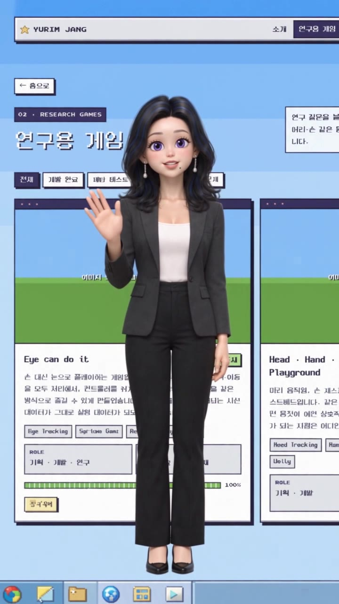
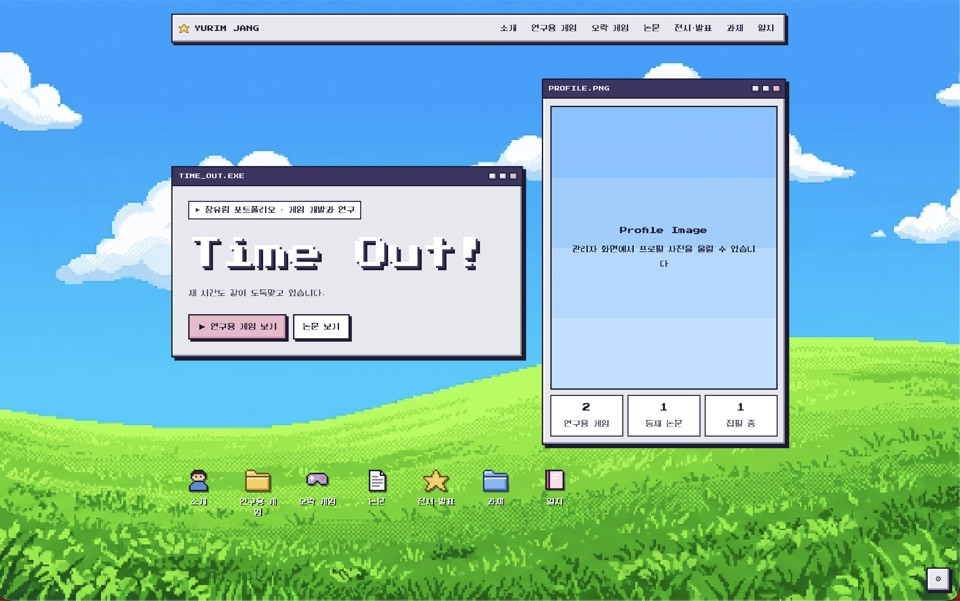
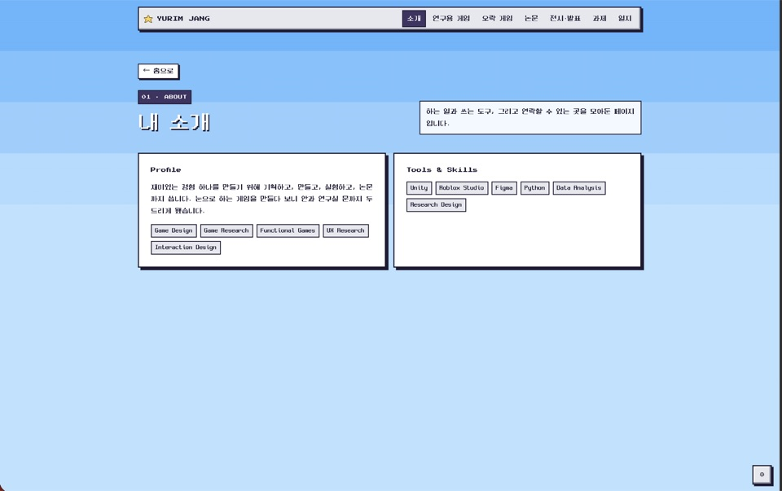
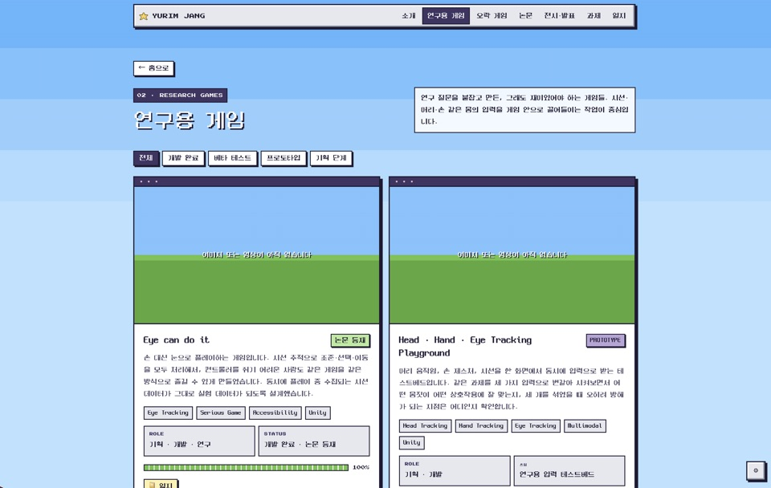
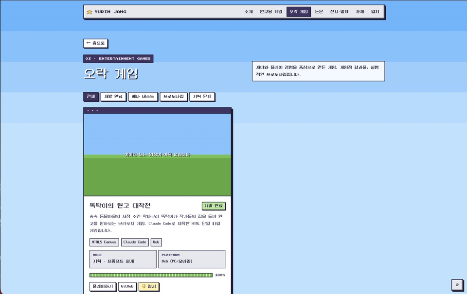
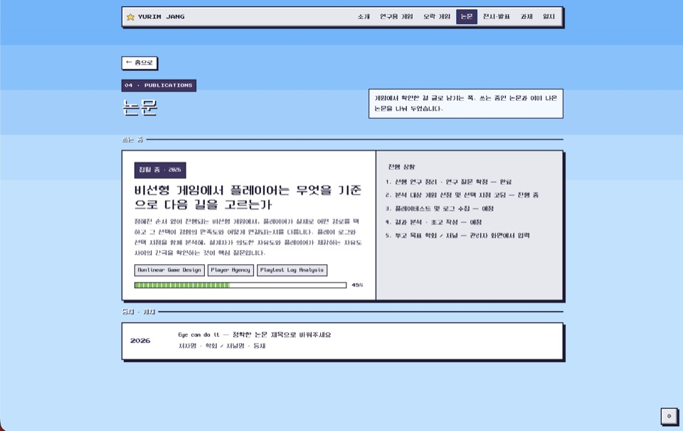
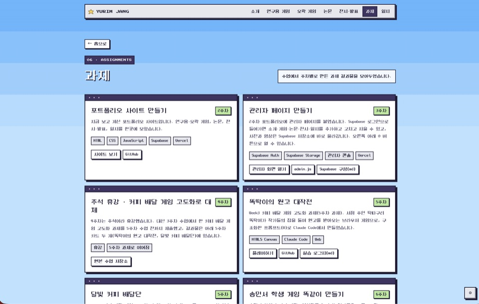
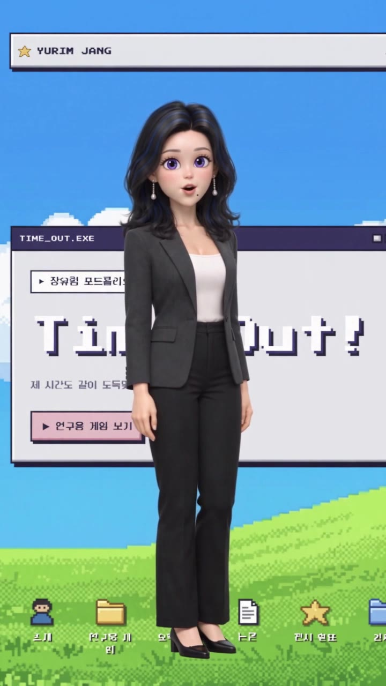
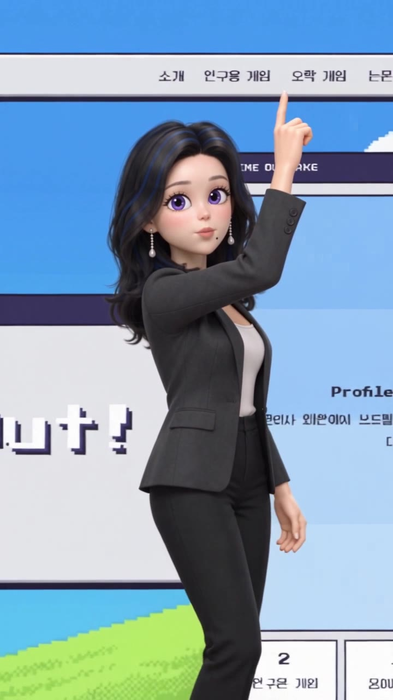
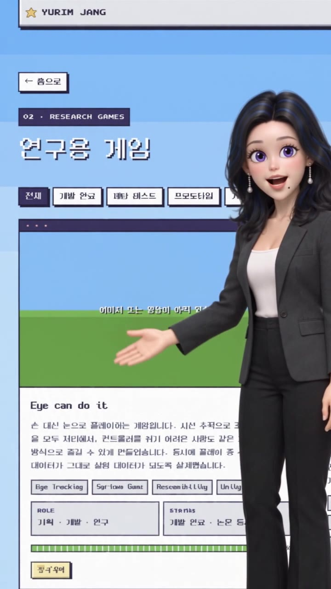

캐릭터 시트로 얼굴·머리·의상을, 사이트 스크린샷 9장으로 배경을 고정했습니다. "사이트를 다시 디자인하지 말 것"을 프롬프트에 못 박았습니다.







첫 장면은 실제 홈 화면입니다. "Time Out!" 제목 옆에 인물이 나타나도록 시작 이미지를 정했습니다.

구간마다 위치·동작·대사를 정하고, 컷 없이 카메라가 인물을 따라 사이트 안을 이동하게 했습니다.

